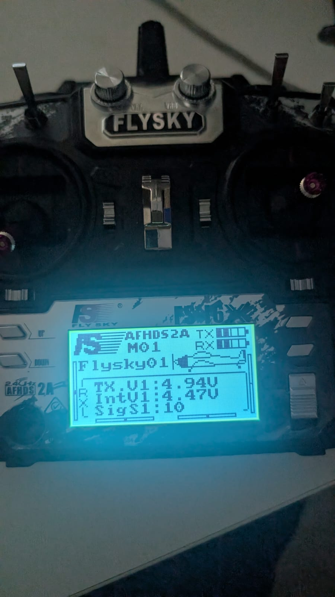

Configuration de l'émetteur FlySky i6X (firmware 1.0, 09-Feb-2022)
Objectif : configurer la i6X elle-même pour notre plan : bon type de modèle, manches en Mode 2, aucun mixage dans l'émetteur (ArduPlane fait tout le mixage), SWA → CH5, SWC → CH6, mode de sortie du récepteur (PWM dans votre montage, à cause de l'encodeur PPM). Ensuite, vérifier chaque commande sur l'écran Display de l'émetteur lui-même, avant même de faire intervenir le Pixhawk.
- ✅ Démarrage : liaison établie
- ✅ Bases du modèle : Airplane, Mode 2, Aux switches activés
- ✅ Tous les mixages de l'émetteur désactivés (7 éléments)
- ✅ Sorties propres : 4.1 Reverse ✅ · 4.2 End points ✅ · 4.3 Subtrim ✅ · 4.4 Trims ✅
- ✅ SWA → Ch5, SWC → Ch6 (modifié)
- ✅ Sortie du récepteur = PWM (modifié plus tard, à cause de l'encodeur)
- ✅ Test sur l'écran Display : les 6 sont corrects
Les touches (noms officiels)
| Vous voulez… | Faites ceci |
|---|---|
| Ouvrir le menu principal | Appui long sur OK (~2 s) → 2 icônes : System setup et Functions setup |
| Se déplacer dans une liste / modifier une valeur | UP / DOWN |
| Ouvrir un élément / passer au champ suivant | Appui court sur OK |
| Enregistrer et revenir | Appui long sur CANCEL (~2 s). Sans appui long, les modifications ne sont pas enregistrées. |
| Revenir sans enregistrer | Appui court sur CANCEL |
| Remettre un élément par défaut | Appui long sur OK 3 s, puis appui long sur CANCEL pour enregistrer (inutile aujourd'hui) |
| Manche | Gouvernes | Mouvement | Sortie Pixhawk |
|---|---|---|---|
| Manche droit ←→ (roulis, CH1) | 2 servos de l'aile principale (ailerons) | Opposé : l'un monte, l'autre descend | MAIN 1–2 Aileron |
| Manche droit ↑↓ (tangage, CH2) | 2 servos de l'empennage | Ensemble : les deux montent / les deux descendent | MAIN 3–4 VTailLeft/Right |
| Manche gauche ←→ (lacet, CH4) | 2 servos de l'empennage | Opposé : l'un monte, l'autre descend | MAIN 3–4 VTailLeft/Right |
| Manche gauche ↑↓ (gaz, CH3) | moteurs | plus / moins de puissance | MAIN 5, 6, 8 |
| automatique | 2 servos de bascule avant | moteurs vers le haut (drone) ↔ vers l'avant (avion), plus le lacet en mode drone | AUX 1–2 TiltMotorFront… |
Journal des réglages : ce que nous avons vérifié/modifié et ce que cela signifie (mis à jour 19:32)
Une ligne par réglage, dans l'ordre où nous les avons faits. Les étapes ci-dessous disent comment ; ce tableau dit ce que nous avons constaté.
| # | Menu → élément | Votre résultat | Modifié ? | Signification (1 ligne) |
|---|---|---|---|---|
| 1 | Écran d'accueil | Barres TX+RX · IntV1 4.52 V · SigS1 10 | – | L'émetteur et le récepteur sont liés (le récepteur renvoie sa tension + un signal de 10/10). |
| 2 | System → Type select | Airplane | Non | Voies simples, pas de mixage hélicoptère. |
| 3 | System → Sticks mode | Mode 2 | Non | Gauche : gaz ↑↓ / lacet ←→. Droite : tangage ↑↓ / roulis ←→. |
| 4 | System → Aux switches | All On · Ch 10 | Non | Les interrupteurs sont utilisables et assez de voies sont envoyées. |
| 5 | Functions → V Tail | Off | Non | Le Pixhawk mixe l'empennage en V. Le faire deux fois casserait le tangage/lacet. |
| 6 | Functions → Elevon | Off | Non | Mixage d'aile volante. Pas pour nous. |
| 7 | Functions → Mixes | Mix 1–3 Off | Non | Aucun manche ne déplace secrètement une autre voie. |
| 8 | Functions → Throttle hold | Off | Non | Bloquerait les gaz. SWA est notre coupure moteur. |
| 9 | Functions → Throttle curve | 0/25/50/75/100 | Non | Ligne droite : le Pixhawk voit la vraie position du manche. |
| 10 | Functions → Dual rate/exp. | Ch1/2/4 : Rate 100, Exp 0 | Non | Plage complète du manche, sans adoucissement (nécessaire pour la calibration). |
| 11 | Functions → Assign switches | All None | Non | SWA/SWC ne déclenchent aucune fonction de l'émetteur, seulement CH5/CH6. |
| 12 | Functions → Reverse | All Nor | Non | Aucune voie inversée dans l'émetteur. |
| 13 | Functions → End points | All 100% / 100% | Non | Plage complète sur chaque voie, nécessaire pour la calibration. |
| 14 | Functions → Subtrim | Tout centré (Ch1–10) | Non | Centre du manche = vrai centre. (Ch1 semblait décalé d'1 px uniquement parce qu'il était en surbrillance.) |
| 15 | Écran d'accueil → Trims | Les 4 repères au centre (photo 18:25) | Non | Les manches n'ont aucun décalage intégré. ArduPlane gère le trim lui-même. |
| 16 | Functions → Aux. channels | Ch5 : VrA → SwA · Ch6 : VrB → SwC (enregistré, revérifié) | OUI (première vraie modification) | Ch5 suit maintenant SWA (armer/désarmer, RC5_OPTION=153). Ch6 suit maintenant SWC (3 modes de vol : QLAND/QHOVER/FBWA, FLTMODE_CH=6 dans le Guide 04). Avant : les potentiomètres VrA/VrB (réglage d'usine ; vous vous souveniez de « VrB et VrA »). |
| 17 | System → RX setup → Output mode | Était PPM → passé en PWM à 19:32 (Guide 04 C5) · Serial : i-BUS | OUI (plus tard) | Votre câblage comporte un encodeur PPM entre le récepteur et RC IN. Il a besoin de voies séparées (PWM) venant du récepteur et construit lui-même le PPM. En PPM, le Pixhawk voyait des valeurs figées ; en PWM, ça fonctionne ✅. |
| 18 | Functions → Display | Ch1 roulis ✅ · Ch2 tangage ✅ · Ch3 gaz ✅ · Ch4 lacet ✅ · Ch5 SWA ✅ · Ch6 SWC 3 positions ✅ | – | L'émetteur envoie chaque commande sur la bonne voie. Tout problème à partir d'ici se situe côté câble récepteur → Pixhawk / QGC. |
| – | System → RX setup → RF standard | ouvert par erreur → No/CANCEL | Non | Reste en AFHDS2A (affiché sur l'écran d'accueil). Ne le changez jamais, sinon la liaison peut être rompue. |
Étape 1 : démarrage
Allumer correctement
- Les 4 interrupteurs en HAUT, manche gauche (gaz) tout en BAS, puis allumez. Sinon, la i6X émet un bip d'avertissement (Guide 04).
- Branchez l'USB du Pixhawk (alimente le récepteur). LED du récepteur fixe.
- Écran principal : à côté de RX, vous devez voir une barre de batterie. Le manuel dit : « If a receiver is not connected or bound to the transmitter no battery status will be displayed for the receiver. » (si aucun récepteur n'est connecté ou appairé, aucun état de batterie ne s'affiche pour le récepteur). Barre RX visible = liaison établie ✅.
📸 Photographiez l'écran principal (il affiche aussi le numéro de modèle, par ex. M01).
TX.V 5.14 V, IntV1 4.52 V (tension du récepteur), SigS1 10 (force du signal, maximum). Le récepteur est lié à cet émetteur.Étape 2 : bases du modèle (System setup)
Modèle, type, mode des manches
Appui long sur OK → System setup → appui court sur OK. Ensuite :
| Élément de menu | Régler / vérifier | Pourquoi |
|---|---|---|
| Model select | Notez quel modèle est actif (par ex. Model 1). Ne le changez pas : le récepteur est appairé et configuré pour celui-ci. | Chaque mémoire de modèle a ses propres réglages |
| Model name (facultatif) | VTOL-Y3 (UP/DOWN pour la lettre, OK pour la suivante, appui long sur CANCEL pour enregistrer) | Pour toujours savoir que vous êtes sur le bon modèle |
| Type select | Airplane (pas un type hélicoptère) | Les types hélicoptère ajoutent un mixage plateau cyclique/pas |
| Sticks mode | 2 | Mode 2 = gaz + lacet à gauche, tangage + roulis à droite (notre plan) |
| Aux switches | Activez SwA et SwC (on). Nombre de voies Ch : au moins 6 | Le manuel : cela « activates and deactivates switches/knobs as well as changing the amount of active channels » (active et désactive les interrupteurs/potentiomètres et change le nombre de voies actives) |
N'oubliez pas : appui long sur CANCEL après chaque modification.
Remarque d'après le manuel : avec 10 voies, par défaut potentiomètres = CH5/CH6, interrupteurs = CH7–CH10. Nous remplaçons CH5/CH6 à l'Étape 5. Le PPM transporte les 8 premières voies.
Étape 3 : désactiver TOUS les mixages de l'émetteur (Functions setup)
C'est le Pixhawk qui fait tout le mixage, pas l'émetteur
Appui long sur OK → Functions setup → vérifiez chaque élément :
| Élément de menu | Doit être | Pourquoi | Vous |
|---|---|---|---|
| V Tail | Off | ⚠️ Important pour votre avion : ArduPlane mixe déjà l'empennage en V (SERVO3/4 = VTailLeft/Right). Un second mixage dans l'émetteur mixerait le tangage/lacet deux fois, avec de mauvaises voies et un Pixhawk perdu. | ✅ |
| Elevon | Off | Même raison | ✅ |
| Mixes (Mix#1…#3) | Chacun « Mix is Off » | Aucun mixage de voies caché | ✅ |
| Throttle hold | Off | Pour les moteurs thermiques. SWA (armer/désarmer) est notre coupure moteur | ✅ |
| Throttle curve | Ligne droite : L 0%, 1 25%, 2 50%, 3 75%, H 100% | ArduPlane a besoin de la vraie position du manche | ✅ |
| Dual rate/exp. | Ch1, Ch2, Ch4 : Rate 100, Exp 0 | Plage complète et linéaire pour la calibration (le ressenti pourra être ajusté plus tard dans ArduPlane) | ✅ |
| Assign switches | Rien d'affecté (ou « Off ») | Pour que SWA/SWC n'envoient que leur voie | ✅ |
« Peut-on rebrancher le récepteur sans risque ? » Oui : USB uniquement, pas de LiPo, et rien n'est branché sur les sorties MAIN/AUX du Pixhawk, donc rien ne peut bouger. La demande « turn off receiver » n'apparaît que pour les modifications au niveau du modèle (type/model select).
Étape 4 : sorties de voies propres (4 petites vérifications)
Ouvrir la liste (identique pour 4.1–4.3) : écran d'accueil → appui long sur OK 2 s → mettez Functions setup en surbrillance (UP/DOWN) → appui court sur OK. L'ordre de la liste est : 1 Reverse · 2 End points · 3 Display · 4 Aux. channels · 5 Subtrim · 6 Dual rate/exp. · …
Reverse : toutes les voies sur « Nor »
- Dans la liste, Reverse est le 1er élément → appui court sur OK.
- Vous voyez Ch1, Ch2… chacune avec Nor ou Rev. Faites des appuis courts sur OK pour parcourir chaque voie. Contentez-vous de les lire.
- Toutes sur Nor → appuyez une fois sur CANCEL. Une affiche Rev → pendant qu'elle est sélectionnée, appuyez une fois sur UP ou DOWN (elle passe à Nor) → appui long sur CANCEL.
Signification : Rev inverse le sens d'une voie. Les corrections de sens se font plus tard dans ArduPlane, jamais ici.
End points : toutes les voies à 100 % / 100 %
- Dans la liste, DOWN une fois jusqu'à End points (2e élément) → appui court sur OK.
- Chaque voie affiche deux nombres : gauche = butée basse, droite = butée haute. Un appui court sur OK passe à la voie suivante.
- Tout à 100 % des deux côtés → CANCEL une fois. Pas à 100 → sélectionnez cette voie, bougez son manche vers le côté à corriger (choisit la case gauche/droite), UP/DOWN jusqu'à 100 → appui long sur CANCEL.
Signification : les fins de course limitent la course d'une voie. ArduPlane a besoin de la plage complète pour calibrer.
Subtrim : toutes les voies à 0 (centre)
- Dans la liste, DOWN jusqu'à Subtrim (5e élément) → appui court sur OK.
- Des appuis courts sur OK parcourent les voies. Chacune doit afficher 0 / le repère au milieu.
- Tout à 0 → CANCEL une fois. Pas à 0 → sélectionnez-la, UP/DOWN jusqu'à 0 → appui long sur CANCEL.
Astuce : la flèche de la voie en surbrillance peut sembler décalée d'environ 1 pixel. Appuyez sur OK pour déplacer la surbrillance et regardez à nouveau.
Signification : le subtrim décale le centre d'une voie. Il doit être centré pour que « manche au milieu » soit vraiment le milieu.
Trims : les 4 petits curseurs, centrés (pas de menu)
Où se trouvent les barres de trim sur l'écran d'accueil (vérifié sur une vraie photo d'écran d'accueil de i6X, voir Sources) :
┌────────────────────────────────────────┐ ║ FlySky logo AFHDS2A TX [battery] ║ ║ M01 · model name · airplane drawing ║ ║ telemetry: TX.V / IntV1 / SigS1 / RX ║ ← side bars = ║ ║ ║ └──[====|====]──────────[====|====]──────┘ LEFT side ║ = Trim 1 → Ch3 throttle (left stick ↑↓) bottom-left ═ = Trim 2 → Ch4 yaw (left stick ←→) RIGHT side ║ = Trim 3 → Ch2 pitch (right stick ↑↓) bottom-right ═ = Trim 4 → Ch1 roll (right stick ←→)
Chaque barre a une graduation centrale fixe et un repère mobile. Centré = le repère est sur la graduation centrale.
- Revenez à l'écran d'accueil (CANCEL jusqu'à y être).
- Les 4 boutons de trim sont à côté des manches : Trim 1 à côté du manche gauche (vertical), Trim 2 en dessous (horizontal), Trim 3 à côté du manche droit, Trim 4 en dessous.
- Test du bip pour chaque bouton : un clic dans un sens, puis un clic en retour. Un bip plus aigu au retour signifie centré ✅. Sinon, continuez à cliquer vers le milieu jusqu'au bip plus aigu. Le manuel : « When the trim position reaches the middle, the transmitter beeps in a higher tone. » (quand le trim atteint le milieu, l'émetteur bipe sur une tonalité plus aiguë).
- Enregistré automatiquement.

Signification : les trims décalent le centre du manche. ArduPlane gère le trim lui-même, ils doivent donc être centrés avant la calibration.
Étape 5 : affecter les interrupteurs
Functions setup → Aux. channels
Depuis l'écran d'accueil : appui long sur OK 2 s → mettez Functions setup en surbrillance → appui court sur OK → DOWN 3× jusqu'à Aux. channels (4e élément) → appui court sur OK.
Par défaut (manuel) : Channel 5 Source VrA, Channel 6 Source VrB. Changez en :
- Appuis courts sur OK jusqu'à sélectionner Channel 5 → UP/DOWN → Source SwA.
- Appui court sur OK jusqu'à Channel 6 → UP/DOWN → Source SwC.
- Appui long sur CANCEL pour enregistrer.
SwA/SwC non proposés ? Revenez à l'Étape 2, Aux switches, et activez-les.
| Voie | Avant | Après | Commande sur le drone |
|---|---|---|---|
| Ch5 | VrA (potentiomètre gauche) | SwA | Armer / désarmer (moteurs marche/arrêt) |
| Ch6 | VrB (potentiomètre droit) | SwC | Haut = QLAND · Milieu = QHOVER · Bas = FBWA |
Étape 6 : mode de sortie du récepteur (maintenant PWM, voir la mise à jour ci-dessous)
System setup → RX setup
Depuis l'écran d'accueil : appui long sur OK 2 s → mettez System setup en surbrillance → appui court sur OK → DOWN jusqu'à RX setup (vers le bas de la liste) → appui court sur OK → DOWN 7× jusqu'à Output mode (RF standard, RX battery, Failsafe, Sensors list, Choose sensors, Speed and distance, ASL pressure, Output mode ; n'ouvrez rien en chemin) → appui court sur OK. Le récepteur doit être allumé (USB du Pixhawk branché, barre RX visible).
| RX setup → … | Régler / vérifier |
|---|---|
| RF standard | ⚠️ Ne l'ouvrez PAS. L'écran d'accueil affiche déjà AFHDS2A en haut, et c'est ça la vérification. L'ouvrir demande d'éteindre le récepteur puis « This will change the AFHDS mode, are you sure? ». Répondre oui pourrait rompre la liaison et nécessiter un réappairage. Si vous y arrivez : CANCEL / No. |
| Output mode | ⚠️ PWM pour votre câblage (encodeur PPM entre le récepteur et RC IN). PPM uniquement si l'encodeur est retiré et qu'un câble direct est utilisé. Écrit à l'origine : PPM sur la ligne du haut (ligne Serial : laissez i-BUS). Manuel : « When [PPM] is selected the receiver will output a standard PPM signal via the PPM interface. » (quand PPM est sélectionné, le récepteur sort un signal PPM standard via l'interface PPM) → appui long sur CANCEL. |
| Failsafe | Pas maintenant. Il demande des précautions avec ArduPlane, il aura donc son propre guide. |
Le récepteur doit être alimenté et lié (Étape 1) quand vous enregistrez l'Output mode, car le réglage lui est envoyé.
Étape 7 : test sur l'émetteur lui-même
Functions setup → Display
Depuis l'écran d'accueil : appui long sur OK 2 s → mettez Functions setup en surbrillance → appui court sur OK → DOWN 2× jusqu'à Display (3e élément) → appui court sur OK.
Cet écran montre ce que l'émetteur envoie, en direct. Aucun bouton à presser ici : vous bougez seulement les manches et les interrupteurs avec les doigts et regardez les barres.
À quoi ça ressemble : une liste de barres (Ch1, Ch2, Ch3…). Chaque barre a une partie remplie qui grandit ou rétrécit quand vous bougez une commande. Commande centrée = barre à moitié pleine. Commande en butée d'un côté = barre vide, de l'autre = pleine.
Où sont SWA et SWC : sur le bord supérieur de l'émetteur. SWA = côté gauche, interrupteur extérieur (2 positions). SWC = côté droit, interrupteur intérieur (3 positions : haut / milieu / bas).
Faites une commande à la fois, lentement, d'une butée à l'autre, et regardez quelle barre bouge :
| Bouger | Barre qui doit bouger |
|---|---|
| Manche droit ←→ | Ch1 (roulis) |
| Manche droit ↑↓ | Ch2 (tangage) |
| Manche gauche ↑↓ | Ch3 (gaz) |
| Manche gauche ←→ | Ch4 (lacet) |
| SWA haut/bas | Ch5 : une butée ↔ l'autre butée |
| SWC haut/milieu/bas | Ch6 : butée / milieu / butée |
Appui court sur CANCEL pour sortir. (Ne faites pas d'appui long sur OK ici : cela lance le « scrub mode », qui balaie toutes les voies.) 📸 Photographiez le Display avec SWC au milieu.
Faire un retour
- Photo de l'écran principal (barre de batterie RX visible ? numéro de modèle ?)
- Étapes 2–6 faites (tout ce que vous n'avez pas trouvé, avec une photo de l'écran)
- Étape 7 : chaque barre a-t-elle bougé correctement sur le Display de la i6X ? (photo)
- Ensuite : résultat du Guide 04 C5. Les points du Raw Channel Monitor dans QGC suivent-ils les manches ?
Sources
- Perth Radio Sailing : programmation FlySky FS-i6 / i6X (2022) : photo de l'écran d'accueil avec les 4 barres de trim (« All four slider trims set to zero »)
- AMYA : configurer une FlySky FS-i6 : barres de trim de l'écran d'accueil « Far Left / Lower Edge Left / Lower Edge Right / Far Right »
- Manuel d'instructions FlySky FS-i6X (PDF) : §2.2.2 indicateur de batterie, §2.2.3 trims, §4.2 appairage, §5.2–5.13 Functions, §7 System (Sticks mode, Aux switches), §8 RX setup (RF standard, Failsafe, Output mode), §9 voies par défaut
- Manuel d'instructions FS-i6X (copie ManualsLib)
- Forum ArduPilot : FS-iA10B vers Pixhawk (PPM depuis PPM/CH1 vers RC IN)